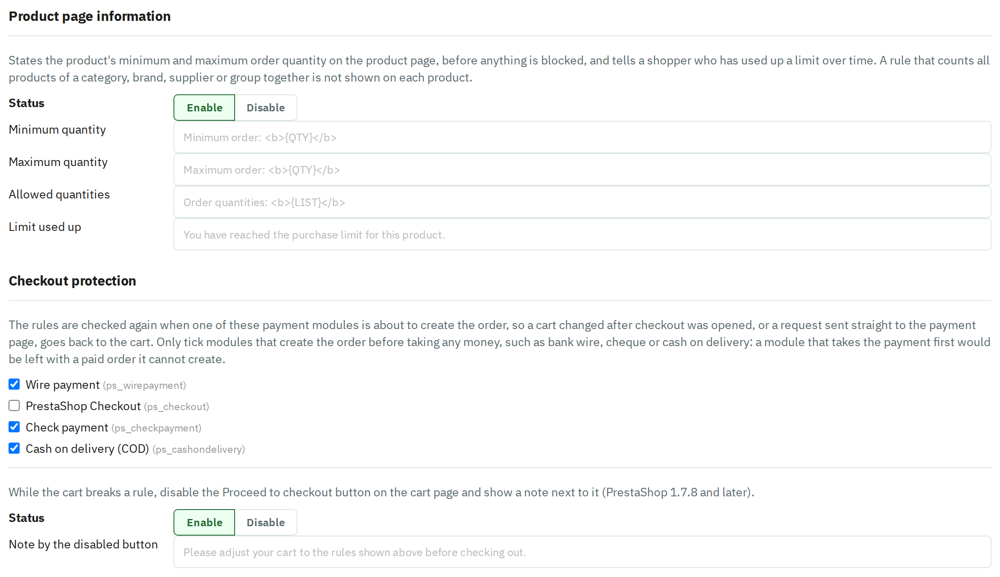
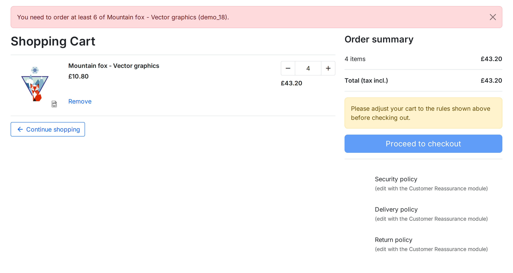

<ul class="legend">
  <li><b>Checkout protection</b> &mdash; two safeguards for the moment the order is created:
    <ul>
      <li>The <b>payment modules</b> you tick re-check the rules just before they create the order, so a cart changed in another tab after checkout was opened, or a request sent straight to the payment page, goes back to the cart. Only tick modules that create the order <i>before</i> taking any money, such as bank wire, cheque or cash on delivery (these three are ticked by default). A module that takes the payment first would be left with a paid order it cannot create.</li>
</ul>

<p class="caption">Product page information and Checkout protection on the Advanced tab.</p>
<p class="note">Whatever these settings say, the order page always re-checks the rules when it opens and sends the shopper back to the cart if one is broken. On PrestaShop 1.7.8 and later it checks again when the shopper clicks to place the order, which also catches a cart changed in another browser tab.</p>
<p>If the cart still breaks a rule &mdash; for example the shopper lowered a quantity on the cart page &mdash; the cart shows the rule's message, and the <b>Proceed to checkout</b> button stays disabled until the cart is corrected:</p>

<p class="caption">The cart page while a rule is broken (PrestaShop 1.7.8 and later).</p>
